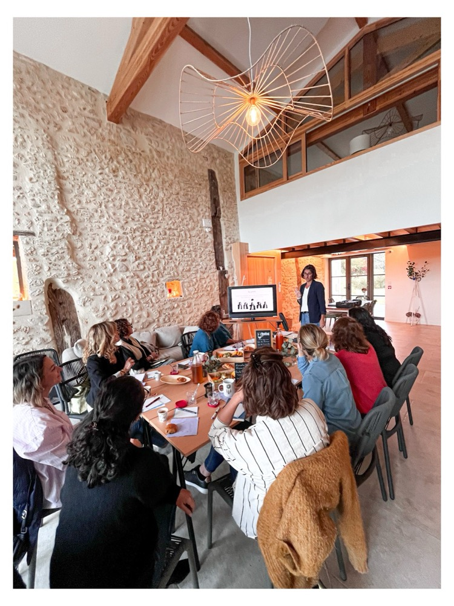
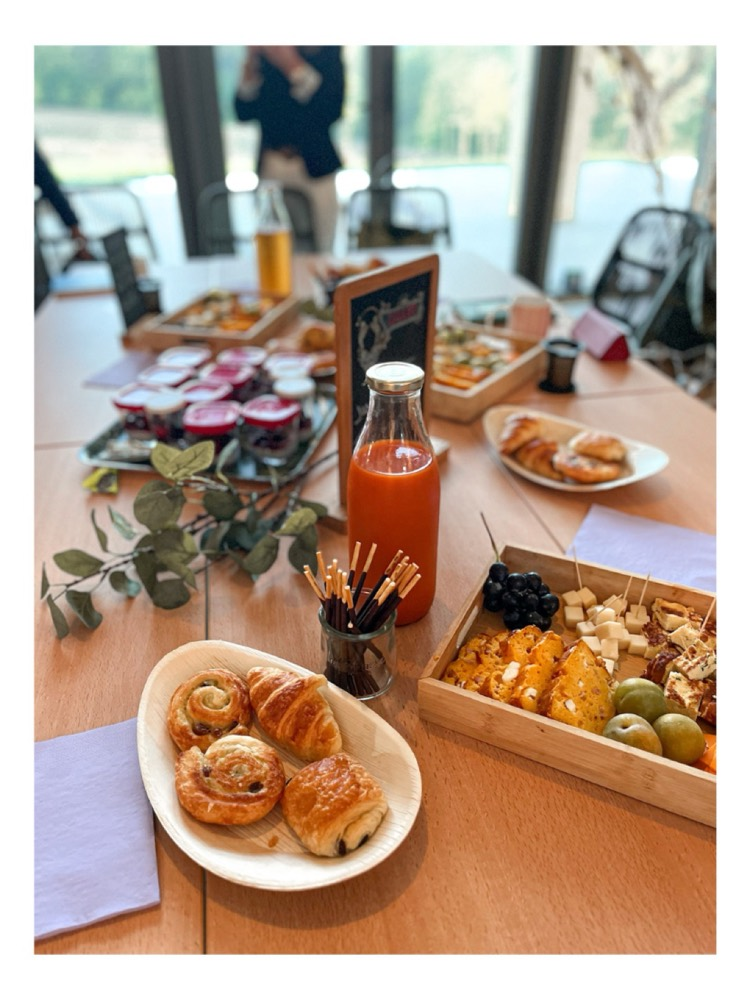
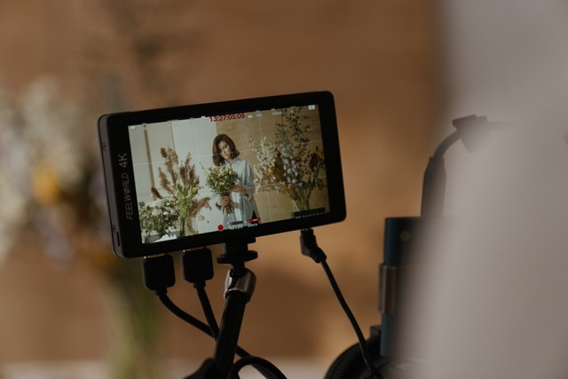
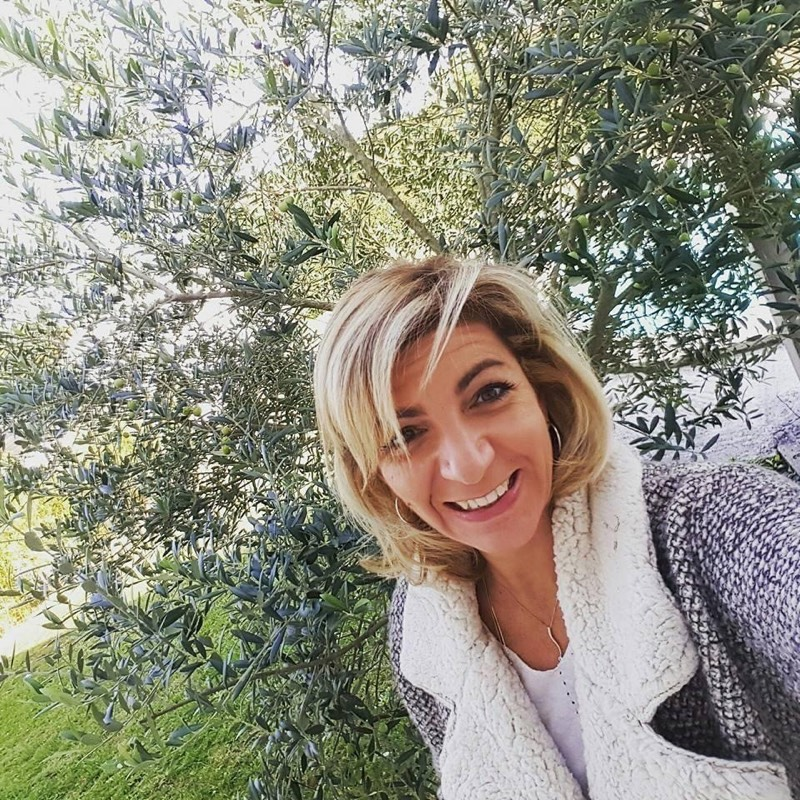

Petit Dej Entr'Femmes
DateJeudi __ ________ 2026à compléter
LieuLieu à confirmerà compléter
ThèmeThème à venirà compléter


Des rendez-vous mensuels pour créer du lien et échanger dans la bienveillance, avec une intervention différente à chaque fois.
Suggestion de la cheffeAccompagnement Instagram 1:1
« Arrête le flou, adopte le flow »
Deviens autonome en 4 semaines.
Le menu en 4 services
Paiement possible en 2 fois.

ça marche aussi à distanceOffre Reels
« Be ready »
L'idée, l'audio, le tournage, le montage, la légende : je m'occupe de tout.
Découvrir l'offre Reels (nouvelle fenêtre)Au menu aussi : ton administratif
20 ans de secrétariat comptable, pour que la paperasse arrête de te voler tes journées.
Voir tous les services (nouvelle fenêtre)Elles en parlent
« J'étais totalement tétanisée sur le sujet des Réels et j'avais besoin qu'on me coache. Elle m'a trouvé les idées et a tout réalisé, je n'avais qu'à poster. J'ai eu beaucoup d'appels grâce à ça. »
« Valérie est très disponible, à l'écoute et a une réelle envie d'aider à simplifier notre quotidien. »
« J'ai compris pourquoi ça ne fonctionnait pas. Et maintenant, j'ai des idées, un calendrier, et je prends enfin du plaisir à communiquer. »
« Valérie a su tout de suite capter l'univers dans lequel j'étais pour pouvoir développer ma page Instagram en accord avec mon travail et ma personnalité. Je la recommande à 1000% »
En vidéo, sur Instagram

Qui suis-je ?
Après 20 ans d'expérience comme Secrétaire Comptable dans différentes entreprises et PME, j'ai décidé de me mettre à mon compte. Le but : apporter à mes clients la solution la plus adaptée à leur besoin, leur faire gagner du temps afin qu'ils se consacrent à leur cœur de métier.
Gestion administrative d'un côté, communication de l'autre : l'accompagnement Instagram, les Reels, et le Petit Dej Entr'Femmes que j'organise chaque mois pour qu'on ne se sente plus seules dans nos activités.
Je dégomme votre gestion et votre com'